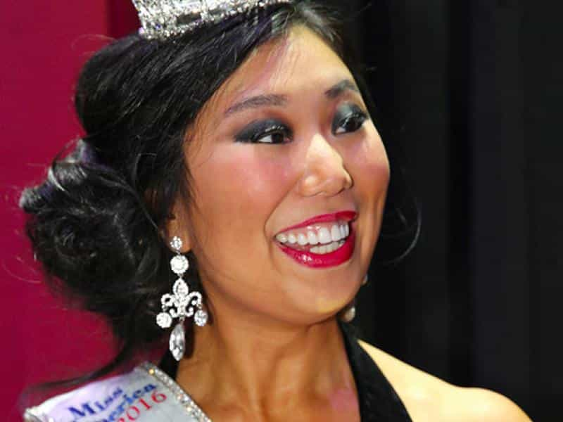
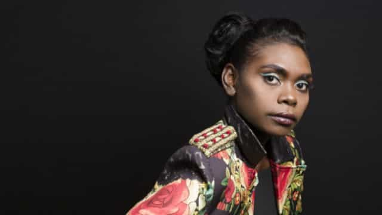
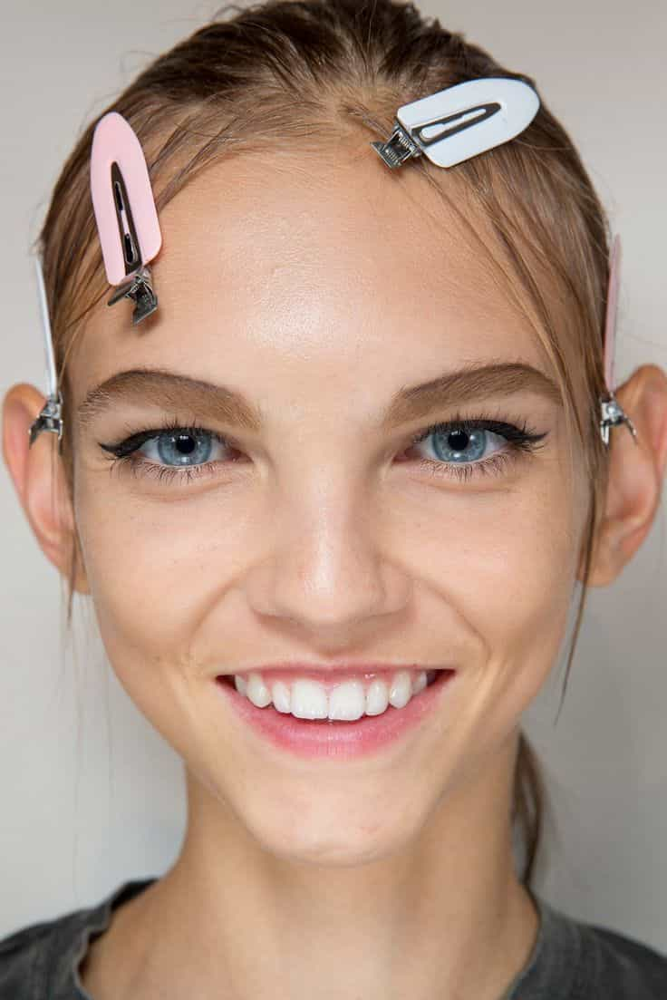
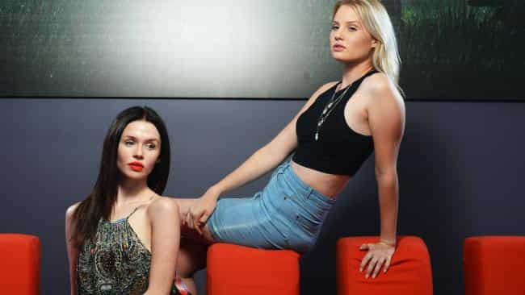
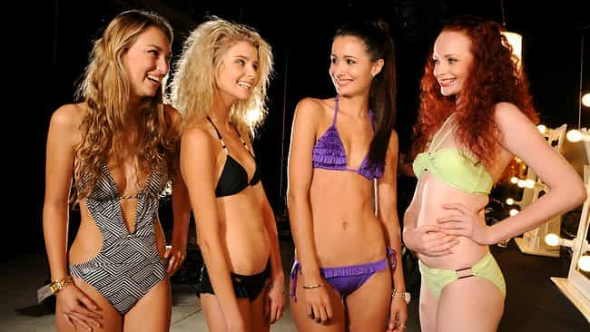
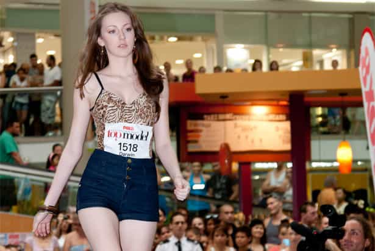

< < < Back
Ugly Minority Girls Are Winning Beauty Pageants To Satisfy The Diversity Agenda – Return Of Kings
Toxic SJW notions of “beauty” (think awful role model and alleged scammer Tess Munster) are well-known. Sadly, it appears that the need to appease certain groups has now filtered down to giving beauty pageant titles to girls based on their race or ethnicity. Two recent “winners” of state-based national beauty pageants, Magnolia Maymuru (Miss World, Northern Territory, Australia) and Arianna Quan (Miss America, Michigan), are so unbelievably plain and even ugly that the “beauty” in beauty pageant should have been removed from the contests they each entered.
In the case of Quan, the biggest criticisms came from her ancestral homeland of China. Chinese netizens need not fear the kind of racism accusations that would be leveled at white Americans questioning whether she deserved the Miss America title for one of America’s most populous states (Miss America’s national event will be in September).
Media coverage of Maymuru’s crowning was ecstatic, namely because, in the words of many racial quota-leaning commenters, “it was about time” that an Aboriginal Australian won such a title. Few online respondents dared to call her unattractive due to the near certainty of them being labeled as racist bigots. She eventually placed in the top 10 for the Miss World Australia final, “beating” much more attractive competition.
Here’s a picture of Miss Michigan Arianna Quan, who became the topic of a Roosh V Forum thread, after her victory:

And here’s another shot of Miss World, Northern Territory Maymuru, whose other photo features as the main image for this article:

On the street, neither of these girls is going to turn heads. Another test, whether women would want to look like them or straight men would want them, would also result in very few takers.
Perceptions about female attractiveness may vary, but Maymuru and Quan’s wins are ridiculous

Fashion model Molly Bair is far from my ideal girl, but she fits the bill of worthy beauty pageant winner far better than either Magnolia Maymuru or Arianna Quan.
I, probably like you, have long noticed a moderate looks discrepancy between glamor models and general fashion models. With the exception of, say, Victoria’s Secret girls, who look a lot more like their glamor or bikini counterparts, the attractiveness of fashion models seems to be somewhat lower or more elusive. Scouts seem to be more preoccupied with a “unique” look, rather than conventional attractiveness, for fashion models compared to other models.
All that aside, there comes a point at which certain agendas of the political, racial and ethnic variety try to determine who wins what. Magnolia Maymuru’s “triumph,” for example, resulted in a media that could not contain its delight about someone of a certain race winning a beauty pageant title. With all the fanfare regarding her minority status, it is hard to see how she won on merit. Shouldn’t a win like this speak for itself if it is deserved? In the end, what SJWs say should be treated as a normal thing is actually treated completely very abnormally, as if to justify it. The exact same thing happened with the laudatory coverage of Tess Munster for being “fat and beautiful.”
When real “beautiful women” win pageants, journalists do not usually feel the need to reiterate how dazzling the girl is. Maymuru’s winning of the Miss World, Northern Territory title resulted in tabloid soliloquy after soliloquy. Just in case you did not already know, she’s beautiful! Miss World’s mantra “beauty with a purpose” is meant to soften criticism about the looks of a winning state, national or international entrant, pointing to, say, their charitable or community involvement. But is it a beauty pageant or not? If the answer is yes, attractiveness is the overriding factor.
As for Quan, her academic major, Transportation Design, immediately raises suspicion. Is her win just a nod to “women in science or engineering”? Furthermore, being the great state of Michigan, surely there could have been at least 20,000 (or more) very decent-looking Asian-American girls capable of plausibly winning a beauty pageant like this. If Quan can win, no wonder many hot girls do not even enter these contests.
Who did they beat to win?

Two Northern Territory models selected for the top 100 of a recent series of Australia’s Next Top Model (source: NT News). Though not sex symbols, they are much better-looking than Magnolia Maymuru.
Quan’s competitors in Michigan were not the biggest stunners to ever grace a beauty pageant, yet almost all of them markedly or substantial outdo her in physical attractiveness. Maymuru’s fellow Miss World, Northern Territory entrants have been harder to track down. But, in addition to the sisters in the picture above, here are just two of the Northern Territory girls who have featured in the top 100 or better in an edition of Australia’s Next Top Model:

The redhead on the far right.

What exactly were the Miss World, Northern Territory judges thinking this year?
“Fat is beautiful” is only the tip of the iceberg
Eat your heart out, Tess Munster. New girls have arrived at the “beautiful because we say so” party. After obesity apologia comes race apologia (one which conveniently ignores the very attractive minority girls out there). Soon physical beauty will be a product of one’s political beliefs. In fact, celebration of the ugly has long been an integral element of feminists trying to first rationalize and then redirect their boiling self-hatred.
Despite its culture-poisoning effects, at least the world of celebrities in large part continues to allow people, especially men, to reward truly good-looking women with attention. Beauty pageants are clearly falling into the abyss, strangled by their own need to call someone beautiful based on the color of their skin, their university major, or some other unrelated, even farcical factor.
Read More: 35 Pretty Girls Who Became Fat And Ugly